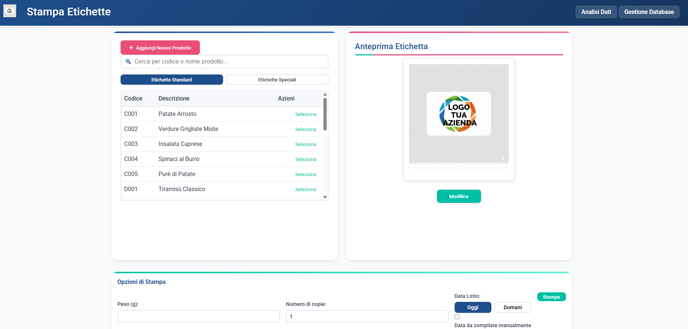
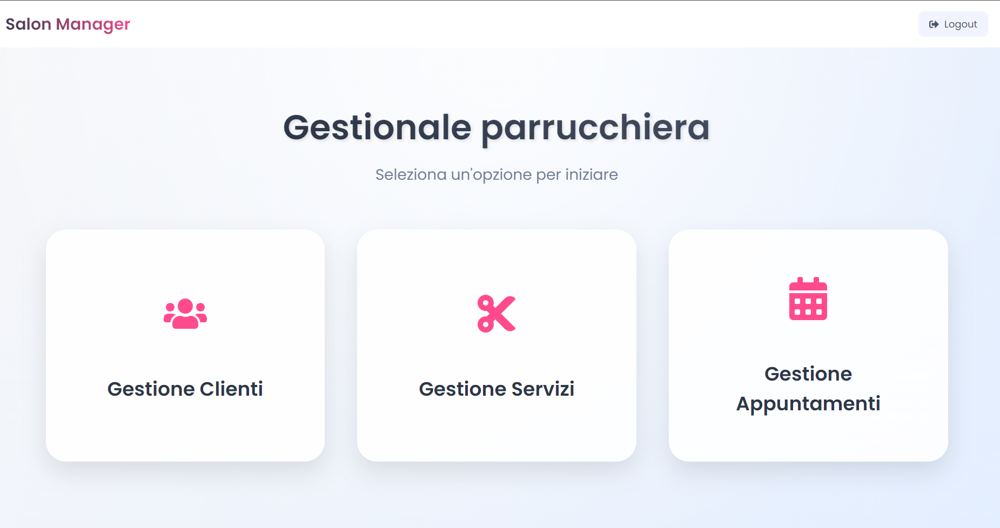
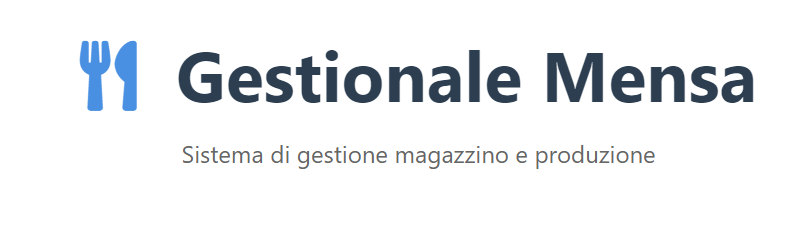

Data Automation & Intelligence
Dashboard e pipeline di elaborazione dati custom che sostituiscono i tool di BI tradizionali, con analisi in real-time direttamente su PostgreSQL.
Sono Alessandro Barresi. Progetto dashboard, automazioni e flussi dati che fanno girare la supply chain — dall'ordine alla consegna — con Python, SQL e un approccio AI-first.
Oggi sono AI Operations & Supply Chain Specialist in Dog Heroes, scale-up del pet food fresco: presidio il flusso ordini multicanale (D2C Shopify, Amazon, B2B), costruisco dashboard e sistemi di elaborazione dati custom con Python, SQLAlchemy e Streamlit su PostgreSQL, ed elaboro i forecast settimanali che guidano la produzione della linea freschi.
Prima di arrivarci ho attraversato l'energia — portfolio management e forecasting in SIME Partecipazioni, con database SQL e VBA — e l'industria alimentare in Galbani, dove sono passato dalla linea di produzione allo sviluppo di dashboard KPI in Python per la direzione. È lì che ho capito che il mio posto è il punto in cui i processi incontrano il software.
Mi guida un principio semplice: ogni flusso ripetitivo può diventare un sistema. Applico logiche Lean, integrazioni API e automazioni AI-powered per digitalizzare i processi operativi, ridurre gli sprechi e liberare tempo per le decisioni che contano davvero.
Un mix operativo: ingegneria dei dati leggera, automazione dei processi e visione di supply chain end-to-end.
Dashboard e pipeline di elaborazione dati custom che sostituiscono i tool di BI tradizionali, con analisi in real-time direttamente su PostgreSQL.
Presidio del flusso ordini D2C Shopify, Amazon e B2B: SLA di evasione rispettati, tracking integro e anomalie intercettate prima che diventino problemi.
Forecast settimanali e pianificazione dei lotti di produzione per la linea freschi: slot di consegna ottimizzati, sprechi ridotti al minimo.
Monitoraggio inventory di materie prime e prodotto finito, con logiche di riordino automatico integrate nell'ecosistema ERP/WMS.
Coordinamento dei partner logistici e scouting fornitori per packaging e materie prime: margine lordo ottimizzato, lead time ridotti.
Digitalizzazione dei flussi operativi con principi Lean, integrazioni API e automazioni potenziate dall'AI: meno task ripetitivi, più valore.
Dalla linea di produzione alla supply chain data-driven: ogni tappa ha aggiunto un pezzo.
Una selezione di applicazioni, giochi e gestionali. Alcuni progetti sviluppati in ambito lavorativo non sono pubblicamente accessibili.
Il gioco natalizio, riscritto da zero: motore data-driven con livelli e nemici definiti come dati, boss a fasi, power-up, particellari e un'unica codebase per desktop e mobile (tastiera + touch).

Applicazione desktop per il processo di etichettatura: DB manager no-code, interfaccia di stampa e dashboard di analisi dati integrata.

Web app per la gestione di un salone: clienti, servizi e appuntamenti. Backend Python, frontend Node.js.

App desktop (PyInstaller) in Python/Flask per la gestione di una mensa: login, database SQL e interfaccia web-based.
Idea progettuale per un'app di gestione e monitoraggio prestiti: analisi di mercato, personas e mockup dell'interfaccia.
Forecasting energetico, app meteo, sistemi di raccolta dati di produzione, web app per analisi temperature e altri esperimenti.
Vuoi vedere com'era questo portfolio nel 2024/25? Visita l'edizione classica →
Sono sempre aperto a nuove opportunità, collaborazioni o anche solo a una chiacchierata su dati, automazioni e supply chain.